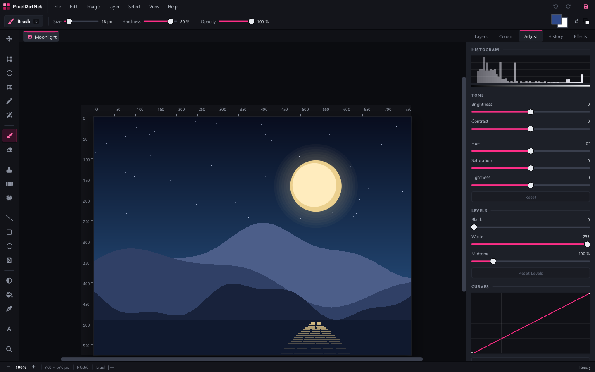
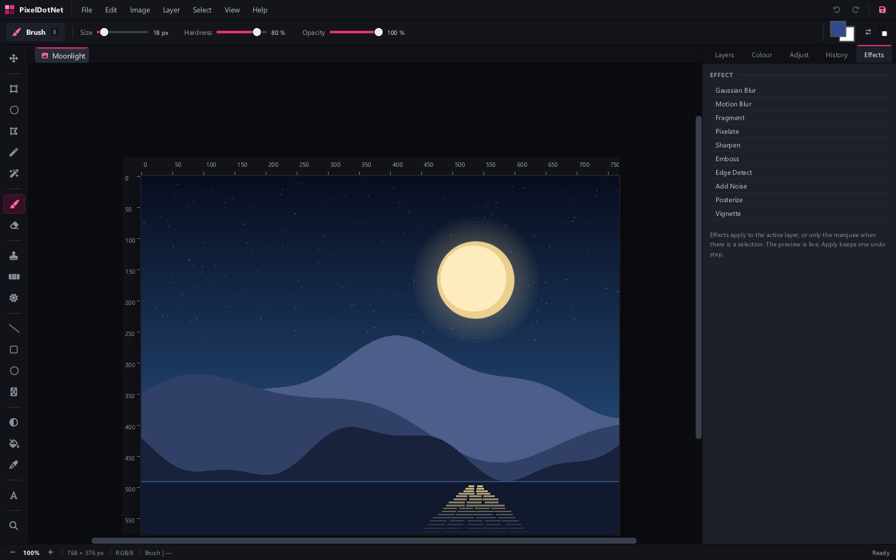
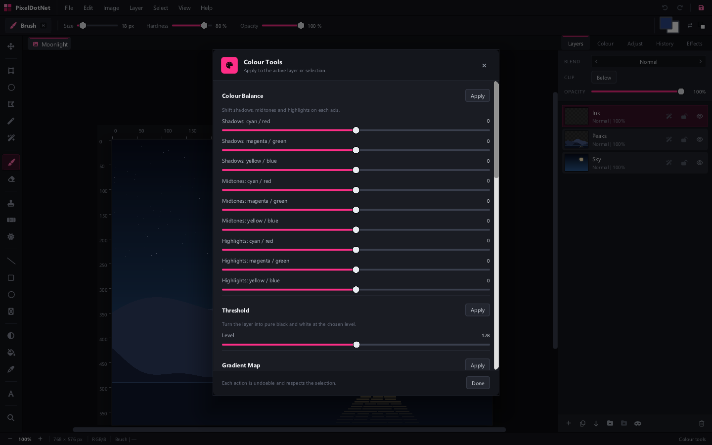
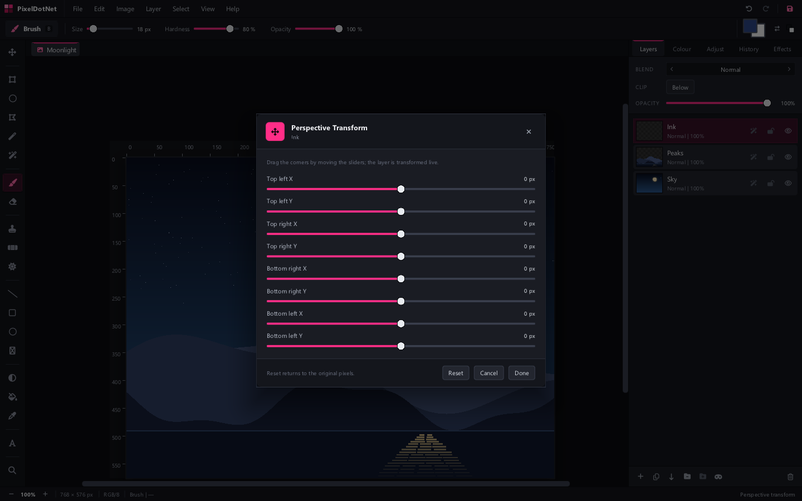
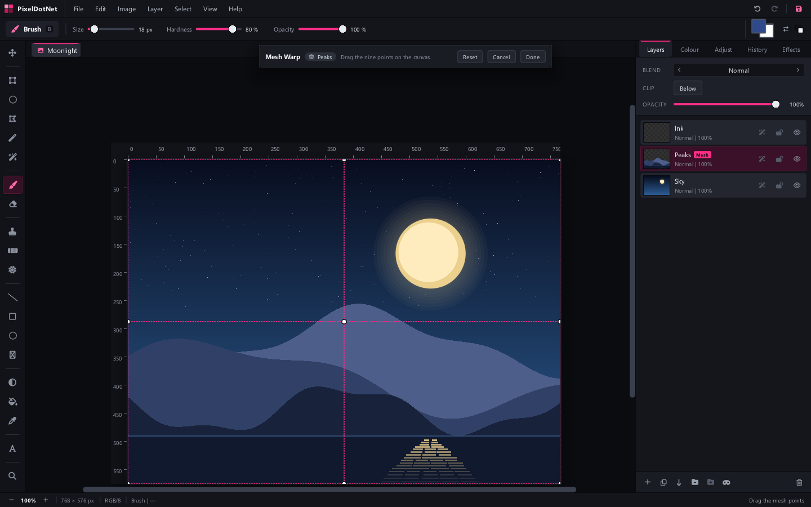
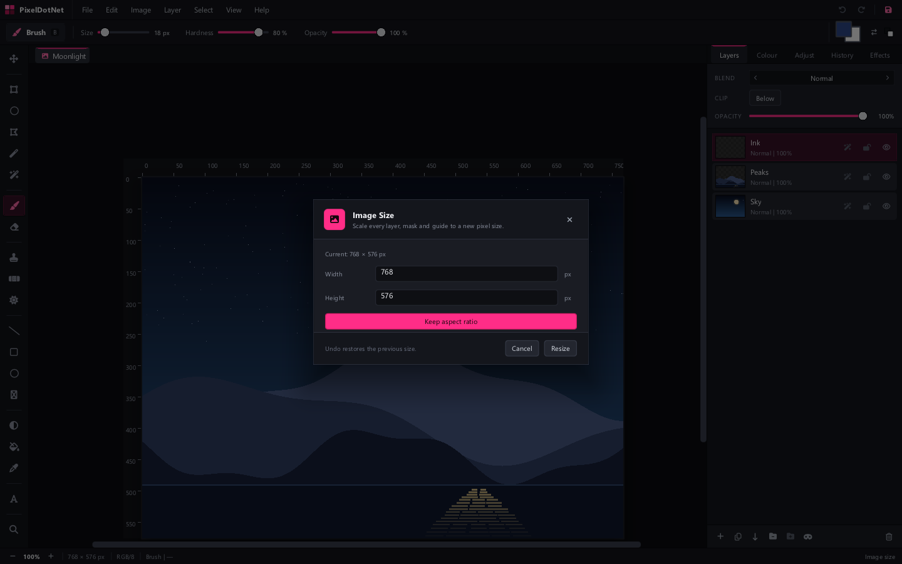

Colour, effects and transforms
These are the commands that change how a picture looks rather than adding new paint: brightness and colour, filters, colour tools, perspective, warping, resizing, and the undo history.
Quick fixes for a photo
If you only remember four things from this chapter, remember these:
Too dark or too bright?
Open the Adjust tab and move Brightness. Add a little Contrast so the picture does not look flat.
Washed out?
In Levels, bring the Black slider up until shadows are deep, and the White slider down until highlights are clean.
Colours too weak?
Raise Saturation a little. Small changes look more natural than large ones.
Soft or noisy?
Use the Effects tab: Sharpen for a soft photo, or a small amount of Add Noise to blend a repair.
The Adjust tab
Open the Adjust tab on the right. It contains live sliders for brightness, contrast, hue, saturation, and lightness, plus Levels and Curves.
Every control previews on the active layer, or only inside the selection if one exists. Moving a slider back and forth does not slowly damage the picture, because each preview starts again from the original pixels.
- Brightness makes the picture lighter or darker.
- Contrast pushes lights and darks apart or brings them together.
- Hue rotates all colours around the colour wheel.
- Saturation makes colours stronger or more muted.
- Lightness moves the overall tone without changing hue.
Apply keeps the result as one undo step. Reset restores the original pixels.

Levels and Curves
Levels
Levels set a black point, a white point, and a midtone. This is the fastest way to fix a picture that looks washed out or too dark.
- Black makes everything below this value pure black.
- White makes everything above this value pure white.
- Midtone brightens or darkens the values in between.
Move the black slider up until the darkest useful shadows just touch black, and move the white slider down until the brightest highlights just touch white.
Curves
Curves map an input tone to an output tone. The horizontal axis is the original tone and the vertical axis is the new tone. A straight line from bottom left to top right changes nothing.
- Click the curve to add a point.
- Drag a point up to brighten that tone, or down to darken it.
- Drag a point far to the side to change contrast in that range.
- Drag a point out of the graph to remove it.
- Use Reset Curve to return to the straight line.
Adjustment layers
A normal adjustment changes pixels. An adjustment layer is different: it sits above the layers below and changes how they look without altering their pixels. You can hide it, fade it, reorder it, or delete it at any time.
- Select the layer above which the adjustment should sit.
- In the Adjust tab, click Levels Layer or Curves Layer.
- A new adjustment layer appears in the Layers panel.
- Select the adjustment layer to edit its sliders.
- Use its mask or a selection to limit where the adjustment applies.
Adjustment layers affect every visible layer below them in the same group or stack. Move one down if it should affect fewer layers. They are saved in project files.
The Effects tab
Open the Effects tab on the right. Pick an effect and drag the amount slider. The preview is live, and Apply bakes the result into the active layer or selection. Cancel restores the original pixels.
| Effect | What it does |
|---|---|
| Gaussian Blur | Softens the picture evenly. Good for depth and focus. |
| Motion Blur | Smears pixels horizontally, like movement. |
| Fragment | Creates a soft, offset echo. |
| Pixelate | Turns the picture into square blocks. |
| Sharpen | Increases local contrast along edges. |
| Emboss | Turns edges into a raised grey relief. |
| Edge Detect | Draws glowing edges on black. |
| Add Noise | Adds film grain. |
| Posterize | Reduces each colour channel to a few steps. |
| Vignette | Darkens the corners of the layer. |
Effects respect the selection. If you want an effect only on a face, select the face first. If you want to keep the original, duplicate the layer before applying.

Colour Tools
Choose Image → Colour Tools… to open one scrollable window with eight colour operations. Each section has its own Apply button, so you can use them in any order. Every action is undoable and respects the selection.
Colour Balance
Shift the colours of the shadows, midtones, and highlights separately. Each row is an axis: cyan to red, magenta to green, yellow to blue. Small changes are usually enough.
Threshold
Turn the layer into pure black and white. The Level slider decides where the cut-off sits. Low values keep more black; high values keep more white.
Gradient Map
Map the brightness of the picture between two colours. Dark pixels take the Dark colour and bright pixels take the Light colour. This is a quick way to make a duotone poster.
Replace Colour
Choose a From colour and a To colour. Every pixel close to the From colour becomes the To colour. Tolerance widens the match. Use a low tolerance for a precise colour and a higher one for a range.
Red-Eye Removal
Select the eye with an elliptical selection, then raise the Strength slider and apply. The tool neutralises red pupils inside the selection while leaving the rest of the eye alone.
Channel Mixer
Each output channel becomes a weighted mix of the source red, green, and blue channels. This is an advanced tool for colour grading and black-and-white conversions. Use Reset to return to the identity mix.
Selective Colour
Pick a colour range, then shift its cyan, magenta, yellow, or black amount. Use it to make reds warmer, skies deeper, or skin tones more even. Each range has its own reset.
Split Channels
Click Split to create three greyscale layers above the active layer, one for red, one for green, and one for blue. This is useful for advanced channel work or for seeing how much each colour contributes.

Perspective, Mesh Warp, Content-Aware Fill
Perspective Transform
Use it when: a photo of a building, poster, or screen is tilted and you want the edges to look straight.
- Select the layer, or make a selection around the area to change.
- Choose Edit → Perspective Transform….
- Move the corner sliders. Each pair moves one corner in and out, as if you were pulling the picture by that corner.
- Press Done to keep the result, or Reset to start again.
The transform previews live and works on the active layer, or only inside the selection when one exists.

Mesh Warp
Use it when: something needs a gentle reshape — a smile, a logo, a horizon, or a product shot.
- Choose Edit → Mesh Warp….
- A three-by-three grid of points appears on the canvas, over the layer or selection.
- Drag any point to bend the picture around it.
- Press Done to keep the result, or Cancel to restore the original.
Mesh Warp is good for small corrections. Large moves stretch the pixels, so use them with care.

Content-Aware Fill
Use it when: you want something removed and the background rebuilt.
- Select the object. Include a small ring of clean background around it.
- Choose Edit → Content-Aware Fill.
- Check the result at 100% and undo if it does not look right. Try a tighter selection or a different sample area.
It works best on small objects against fairly even backgrounds, such as a bird in the sky or a sign on a wall. See the remove something recipe for the full walkthrough.
Red-eye removal
The dedicated control lives inside Colour Tools. Select the pupil with the elliptical selection, set the strength, and apply. The tool looks for red pixels inside the selection and neutralises them. If the result is too strong, undo and try a lower strength.
Invert, Desaturate, and Flip
- Image → Invert or Ctrl+I flips every colour channel, making a negative.
- Image → Desaturate or Ctrl+Shift+U removes colour while keeping brightness. It produces a true grey, unlike simply lowering saturation.
- Image → Flip Horizontal and Flip Vertical mirror the active layer or selection.
Image Size and Canvas Size
Image Size
Image → Image Size… scales the artwork itself. All layers, masks, and guides are scaled to the new size.
- Enter a new width and height in pixels.
- The resize is one undoable step.
- Scaling up cannot invent detail. Work at the final size when you can.
Canvas Size
Image → Canvas Size… changes the document bounds without stretching the artwork. Extra space is transparent. Use the anchor buttons to decide which side keeps the existing content in place. This is how you add room for a border or move the composition inside a larger frame.

Flattening
Image → Flatten Image combines every visible layer into one. Use it only when you are finished with the layer stack, because hidden layers are discarded and the result is much harder to edit. Save a project copy first if there is any chance you will want the layers back.
History
The History tab shows the undo timeline for the current document. Each committed action is a step. Click an older step to jump back to that point. Click a newer step to move forward again.
- The list keeps the most recent 24 steps. When it is full, the oldest step falls off.
- Live previews, such as a slider drag, are not added as separate steps until you commit them.
- Ctrl+Z undoes one step. Ctrl+Y redoes.